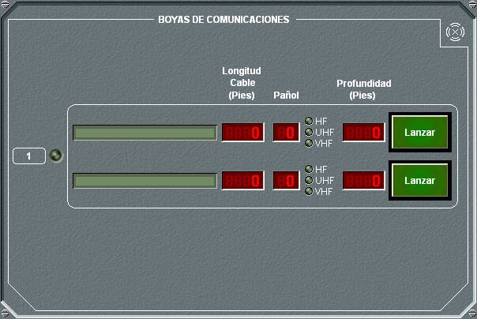

Boyas de Comunicaciones

Desde este panel de detalle de las Boyas de Comunicaciones pueden realizarse las siguientes acciones:
- Pulsando el botón Lanzar se inicia el despliegue de boya de comunicaciones. Junto al nombre de cada boya se muestra la longitud del cable y la cantidad en pañol. Cuando se está desplegando una boya, en el campo Profundidad se muestra una cuanta atrás desde la profundidad del submarino hasta cero.
- Cuando la boya está desplegada, el botón Lanzar cambia su etiqueta a Cortar. Pulsando entonces este botón se corta el cable de la boya, quedando ésta inutilizable por el submarino y a la deriva.
- También se muestra para cada tipo de boya, las bandas de comunicaciones (HF, UHF, VHF) que pueden ser empleadas por la unidad en función de si están o no desplegadas y de las características de la boya (antenas que incorpora). Ver Manual de Preparación – Modelos Básicos - Comunicaciones – Boyas de Comunicaciones. Estos leds se encienden en amarillo mientras la boya esté desplegándose y en verde cuando está completamente desplegada (profundidad cero).